محاسبة الجامعة كلها في نظام واحد، وفق المعايير الدولية، ويدقّق نفسه كل يوم
من فاتورة الطالب إلى القوائم المالية: رسوم الساعات المعتمدة والمنح والجهات الكافلة، التحصيل بعدة عملات، الخزينة، الرواتب، المشتريات، الأصول، المنح البحثية، ومساعدة الطلبة المحتاجين بسرية — بالعربية، على خادم الجامعة، ودون الحاجة لاتصال بالإنترنت.
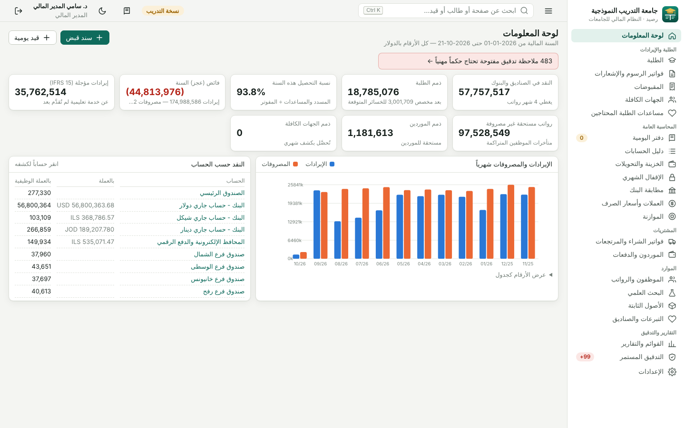
كل ما تحتاجه الدائرة المالية
وحدات مترابطة ترحّل قيودها آلياً إلى دفتر أستاذ واحد بالقيد المزدوج، فلا ازدواج في الإدخال ولا فروقات بين الأنظمة الفرعية والدفاتر.
الطلبة والرسوم
فواتير فصلية بالساعات المعتمدة ورسوم التسجيل والمختبرات، المنح والخصومات، حصة الجهة الكافلة، التقريب لأعلى أو لأسفل أو لأقرب، والإشعارات الدائنة عند الانسحاب.
المقبوضات بعدة عملات
نقدي وتحويل بنكي ومحافظ إلكترونية، بأي عملة، وتُطفأ ذمة الطالب بعملة ذمته فلا تظهر فروقات صرف وهمية. صناديق للفروع وسندات قبض مطبوعة بشعار الجامعة.
الخزينة وصرف العملات
أرصدة كل صندوق وبنك بكل عملة، والتحويل بينها وصرف العملات بقيد آلي يقيّد ما استُلم فعلاً ويرحّل فرق الصرف المحقق والعمولة.
رد المبالغ وبراءة الذمة
رد الرصيد الدائن للطالب باعتماد شخص آخر وبحد رصيده، وشهادة براءة ذمة مطبوعة برقم ورمز تحقق لا تصدر لمن عليه مستحقات.
التقسيط والمتأخرات
خطط تقسيط بتواريخ استحقاق تغطيها الدفعات بالأقدم أولاً، وقائمة المتأخرين بأيام التأخر، وإشعارات تذكير مطبوعة، والتأخر يدخل في أعمار الذمم ومخصص الخسائر.
الشيكات
الواردة برسم التحصيل والصادرة المؤجلة: إيداع وتحصيل، وارتداد يعيد الذمة مع رسومه، وتنبيه بما يستحق هذا الأسبوع، ولا براءة ذمة مع شيك لم يُحصَّل.
الجهات الكافلة
مؤسسات تكفل طلبة بنسبة، بسقف ائتماني للجهة وسقف لكل طالب، وكشف شهري تسدّده الجهة آجلاً نهاية الشهر.
مساعدات الطلبة المحتاجين
صندوق مقيد يموله المتبرعون؛ يقدّم الطلبَ موظف ويعتمده آخر، بحد سنوي للطالب، وتُخفى هوية الأسر المتعففة عمّن لا يملك صلاحية الاطلاع.
المشتريات والموردون
فواتير متعددة الأسطر بضريبة القيمة المضافة، مرتجعات، دفعات بعملة الفاتورة، منع تسجيل فاتورة المورد مرتين، وتنبيه قبل تجاوز الموازنة.
الموظفون والرواتب
هيئة تدريس برتبهم ودرجاتهم، وإداريون وحراس وآذنة، مسير شهري باستقطاعات التقاعد والضريبة، وصرف كامل أو جزئي حسب السيولة مع بقاء المتأخرات مستحقة.
السلف والعهد ونهاية الخدمة
سلف رواتب تُسترد من المسير بأقساط، وعهد نقدية تُسوّى بفواتيرها، ومخصص مكافأة نهاية الخدمة لكل موظف وفق IAS 19 وقانون العمل.
البحث العلمي
مشاريع ممولة تُسجَّل منحها مؤجلة وتُعترف إيراداً بقدر ما يُنفق منها، ومنشورات أعضاء هيئة التدريس ومكافآت النشر المفهرس.
الأصول والإيجارات والبنوك
سجل أصول بإهلاك شهري واستبعاد، عقود إيجار بأصل حق استخدام والتزام (IFRS 16)، موازنة لكل حساب ومركز تكلفة، ومطابقة آلية لكشوف البنك.
القوائم والتقارير
المركز المالي، الأرباح أو الخسائر بأرقام المقارنة، التدفقات النقدية، التغيرات في صافي الأصول، ميزان المراجعة، الكليات والفروع وتكلفة الطالب، أعمار الذمم.
الانتقال من النظام القديم
قوالب CSV للطلبة والموظفين والموردين والأصول وميزان المراجعة الافتتاحي والأرصدة التفصيلية، تُفحص كل صفوفها قبل التنفيذ، والتنفيذ كله أو لا شيء.
مبني على المعايير الدولية لإعداد التقارير المالية
المعالجات التالية يطبقها البرنامج آلياً كما هو موضح، وليست مجرد تسميات حسابات.
| المعيار | ماذا يفعل البرنامج |
|---|---|
| IFRS 15 الإيراد من العقود | الرسوم الدراسية تُسجّل التزام عقد (إيراداً مؤجلاً) وتُعترف إيراداً بالتناسب مع أيام الفصل المنقضية؛ المنح الجامعية تخفّض سعر المعاملة؛ الانسحاب يخفّض المؤجل أولاً. |
| IFRS 9 الأدوات المالية | مخصص الخسائر الائتمانية المتوقعة بالنهج المبسط: مصفوفة أعمار قابلة للضبط مع تعديل للتطلعات المستقبلية، وتسوية آلية للمخصص وإعدام الذمم مقابله. |
| IAS 21 أثر تغير أسعار الصرف | كل سطر يحفظ مبلغه بالعملة الأصلية وسعره؛ البنود النقدية تُعاد تقييمها بسعر الإقفال، وصرف العملات في الخزينة يرحّل الفرق المحقق، والبنود غير النقدية تبقى بسعرها التاريخي. |
| IAS 20 المنح | المنح البحثية المقبوضة مقدماً تُسجّل مؤجلة وتُعترف إيراداً في فترة إنفاقها؛ المنح التشغيلية في فترة التكاليف التي تعوضها. |
| IAS 16 الممتلكات والمعدات | إهلاك القسط الثابت شهرياً حسب العمر والقيمة المتبقية، واستبعاد يحسب الربح أو الخسارة. |
| IAS 19 منافع الموظفين | مخصص مكافأة نهاية الخدمة لكل موظف من أول يوم خدمة حسب قانون العمل وافتراضات الخصم ونمو الرواتب، وتسوية شهرية موزعة على مراكز التكلفة. |
| IFRS 16 عقود الإيجار | أصل حق الاستخدام والتزام الإيجار بالقيمة الحالية للدفعات، فائدة شهرية وإطفاء بالقسط الثابت، وفصل الجزء المتداول من الالتزام، وإعفاء العقود حتى 12 شهراً. |
| IAS 7 التدفقات النقدية | قائمة بالطريقة المباشرة تصنّف كل حركة نقدية حسب طبيعة الطرف المقابل، مع أثر الصرف، وتطابق رصيد النقد تلقائياً. |
| IFRS 18 العرض والإفصاح | قائمة الأرباح أو الخسائر بفئات التشغيل والاستثمار والتمويل ومجموعيها الفرعيين الإلزاميين، مع أرقام المقارنة. |
| الصناديق المقيدة | كل تبرع يحمل صندوقه، وتظهر صافي الأصول المقيدة وغير المقيدة في المركز المالي وقائمة التغيرات. |
البرنامج يقوم بالعمل الآلي، والمدقق يحكم
بدل أن يقضي المدقق وقته في البحث اليدوي عن العينات، يفحص البرنامج كل العمليات يومياً ويقدّم ملاحظات مرتبة حسب الخطورة مع سبب أهميتها، ويتفرغ المدقق للتحقق والحكم المهني والتوصية، ويسجل حكمه على كل ملاحظة.
- كشف التلاعب: سلسلة بصمات SHA-256 على كل قيد مرحّل وعلى سجل العمليات؛ أي تعديل أو حذف من خارج البرنامج يُكتشف.
- فصل المهام: من يُدخل القيد لا يعتمده، ومن يطلب رد مبلغ أو مساعدة لا يعتمدهما، والفترة المقفلة لا تقبل ترحيلاً.
- اختبارات الاحتيال المعروفة: الموظف الوهمي بحساب بنكي مشترك، مورد يقبض على حساب موظف، فواتير مكررة، سندات قبض ملغاة، قيود ليلية وبأثر رجعي ومبالغ مدوّرة.
- عينة إحصائية بوحدة النقد (MUS) قابلة للإعادة ببذرتها، واختبار قانون بنفورد على المصروفات.
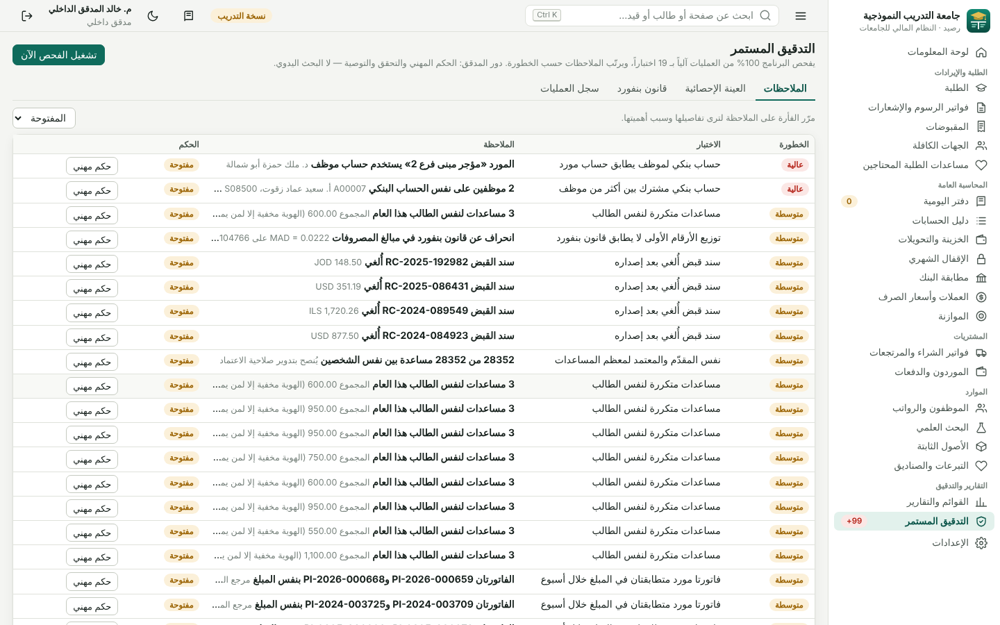
التنزيل
كل نسخة تحمل البرنامج كاملاً مع نسخة التدريب والأدلة. ابدأ بنسخة التدريب، ثم أنشئ النسخة الفعلية لجامعتك من الاختصار الآخر؛ البيانات في مجلد واحد مع نسخة احتياطية يومية تلقائية.
ويندوز
ويندوز 10 و11 وويندوز سيرفر 2016 فما بعد. مثبّت عادي لا يحتاج صلاحية مسؤول، ويضيف اختصارات للنسخة الفعلية ونسخة التدريب وخادم الشبكة الداخلية.
بايثون ومكتبة الربط بـ Oracle مدمجان؛ لا شيء آخر تثبته. على خادم الجامعة: Install-Autostart.bat يشغّله مع إقلاع ويندوز.
خوادم لينكس
أوبونتو 22.04+، دبيان 12+، RHEL أو Rocky 9+. يُثبَّت خدمة systemd تعمل مع الإقلاع.
tar xzf Raseed-Linux.tar.gz cd raseed && sudo ./install.shRaseed-Linux.tar.gz
Docker
صورة جاهزة ببيانات في مجلد دائم، ونسخة تدريب اختيارية بجانبها.
docker compose up -ddocker-compose.yml
الشيفرة لأي نظام
ماك أو أي نظام فيه بايثون 3.11 فأحدث، دون أي مكتبات إضافية.
python run.py --trainingRaseed-Source.zip
بصمات الملفات للتحقق من سلامة التنزيل: SHA256SUMS.txt · كل الإصدارات وملاحظاتها · التحديث: ثبّت الإصدار الجديد فوق القديم، فتُرقّى قاعدة البيانات تلقائياً بعد نسخة احتياطية دون فقد أي بيانات.
لأي جامعة أو كلية
اختر دولتك في الإعداد الأولي فتُضبط العملة الوظيفية والعملات الشائعة وضريبة القيمة المضافة والمنطقة الزمنية وأيام العطلة — وكل شيء قابل للتعديل بعدها.
22 ملف دولة
فلسطين، الأردن، السعودية، الإمارات، قطر، الكويت، البحرين، عُمان، مصر، العراق، لبنان، سوريا، اليمن، السودان، ليبيا، تونس، الجزائر، المغرب، موريتانيا، تركيا، ماليزيا، وغيرها.
هيكلك أنت
الكليات والدوائر مراكز تكلفة، فروع بصناديقها، برامج بأسعار ساعات وعملات مختلفة، فصول ورسوم ومنح، ودليل حسابات قابل للتوسيع، وشعار جامعتك على المطبوعات.
عربي وبدون إنترنت
يعمل على خادم الجامعة أو جهاز واحد، من المتصفح، دون أي مكتبات خارجية أو اتصال بالإنترنت، مع وضع ليلي وطباعة مرتبة وتصدير CSV يفتح في إكسل.
شاشات بلا تمرير زائد
كل مستند يظهر بكل أسطره دون تمرير داخلي، والإعدادات في شريط عمودي مع بحث، والقوائم الطويلة مثل طرق الدفع تُدخل كبطاقات بعلامة × للإزالة.
جُرّب بحجم جامعة كبيرة
نسخة التدريب جامعة كاملة: 100 ألف طالب وطالبة، 5000 عضو هيئة تدريس برتبهم ومشاريعهم البحثية ومنشوراتهم، 2500 إداري، 500 حارس، 500 آذن، حرم رئيسي وأربعة فروع، وثلاث سنوات من العمليات تُكمل نفسها يومياً بالأيام التي لم يُشغَّل فيها البرنامج.
| القياس على حجم الجامعة الكامل (خادم 4 أنوية) | النتيجة |
|---|---|
| توليد ثلاث سنوات (1.6 مليون قيد، 4.4 مليون سطر) | نحو 8 دقائق عند أول تشغيل |
| 150 مستخدماً متزامناً يقرؤون ويكتبون بلا توقف لمدة دقيقة | 171 طلباً في الثانية، 10,421 طلباً، صفر أخطاء، والوسيط أقل من نصف ثانية |
| الدقة بعد الضغط | سلسلة البصمات سليمة، الميزان متوازن، كل سند قبض له قيد ورقم فريد، لا فجوات في الترقيم |
| لوحة المعلومات والميزان والمركز المالي | بضعة أجزاء من الثانية بفضل الأرصدة اليومية المجمعة |
150 مستخدماً يعملون دون توقف تعادل عملياً أكثر من ألف موظف يستخدمون البرنامج في يوم عادي. أداة الاختبار نفسها مرفقة مع البرنامج لتعيد القياس على خادمك.
يتكامل مع نظام الجامعة القائم
مسؤول النظام يحدد من الإعدادات جداول نظام القبول والتسجيل وشؤون الموظفين على Oracle 11g أو أحدث، ويختار لكل حقل عندنا العمود المقابل عندهم من قائمة بأعمدتهم الفعلية — دون كتابة استعلامات ودون تعديل نظام الجامعة.
- من نظام الجامعة: الطلبة وتخصصاتهم وحالاتهم وفروعهم، ساعات التسجيل لكل فصل لتصدر الفواتير آلياً، والموظفون ورواتبهم.
- إلى نظام الجامعة: رصيد كل طالب وبراءة ذمته في جدول وسيط مخصص وحده، يقرؤه نظام التسجيل لإيقاف التسجيل أو إصدار الوثائق.
- معاينة 10 صفوف وتجربة دون تنفيذ قبل كل مزامنة، والمزامنة آمنة للتكرار ومسجلة في سجل العمليات.
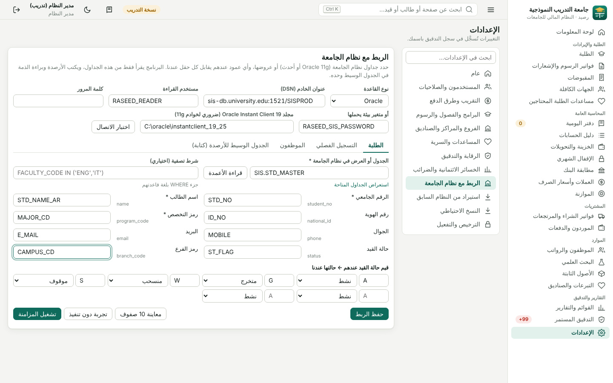
أمان البيانات وحماية النسخة
أمان الدخول
- كلمات مرور بتجزئة PBKDF2 وقفل مؤقت بعد 5 محاولات فاشلة
- جلسات تنتهي بعد ساعة خمول، وحماية CSRF وسياسة أمن محتوى صارمة
- صلاحيات حسب الدور: مدير، مدير مالي، رئيس محاسبة، محاسب، أمين صندوق، مدقق، مطلع
ترخيص لا يُزوَّر
- ترخيص موقّع رقمياً بتوقيع Ed25519 ومربوط ببصمة خادم الجامعة
- الشريك المعتمد مقيد بعدد تفعيلات ومدة وإصدارات، ولا يستطيع الإصدار بتاريخ سابق، ويمكن اشتراط توقيع المورّد على كل تفعيل
- بيان موقّع ببصمات ملفات البرنامج يكشف أي تعديل
بياناتك ملكك دائماً
- انتهاء الترخيص لا يقفل البيانات: يتحول البرنامج للقراءة والتصدير
- نسخة احتياطية يومية تلقائية بآخر 30 يوماً، ونسخة إضافية قبل كل ترقية
- سجل عمليات لا يُعدّل لكل تغيير وباسم من قام به
من داخل البرنامج
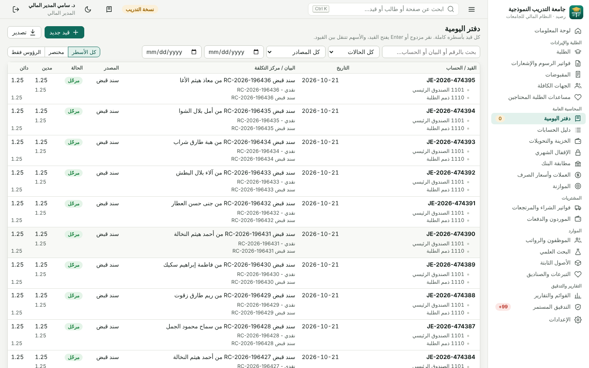
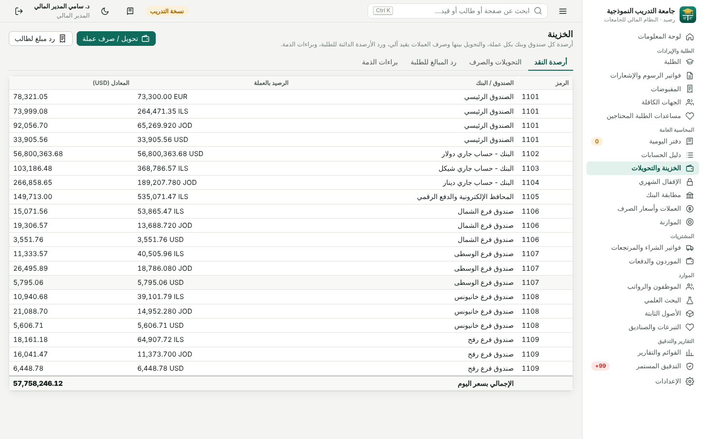
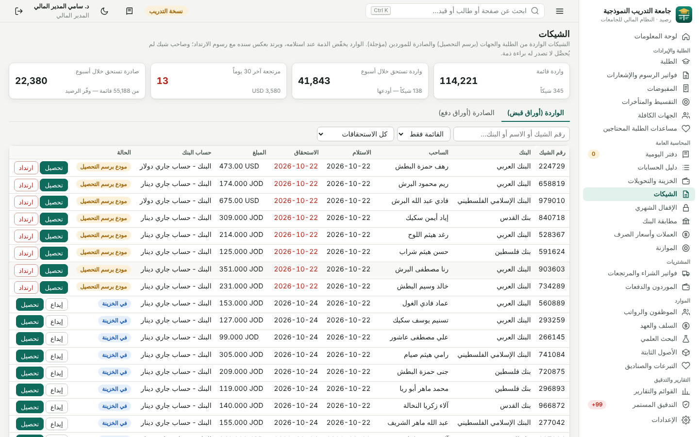
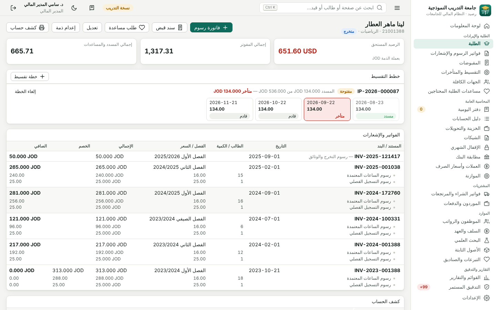
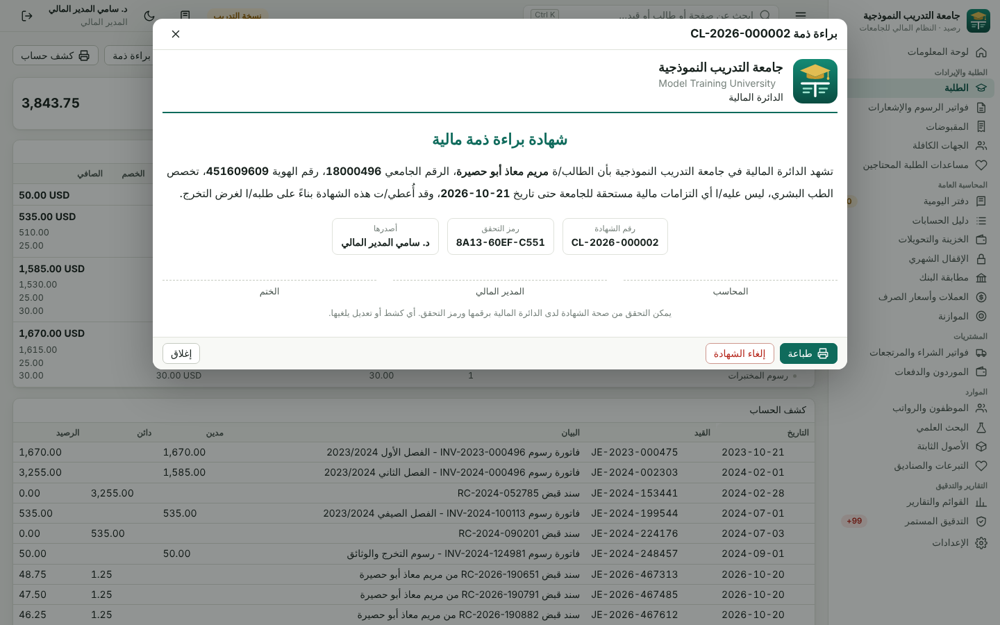
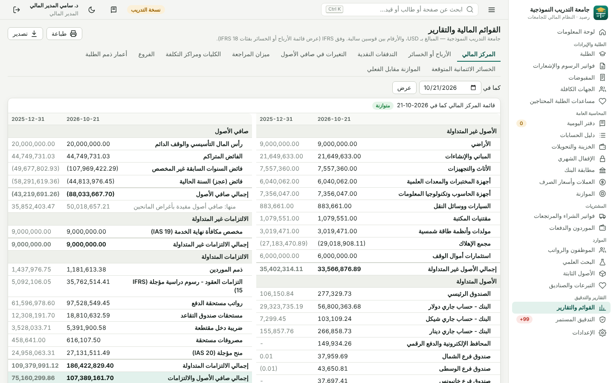
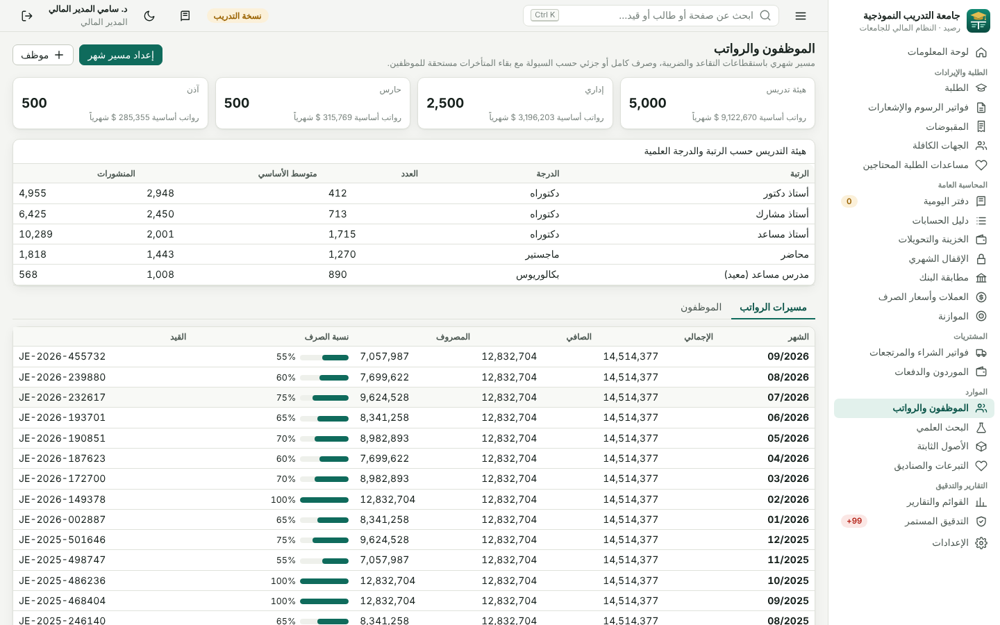
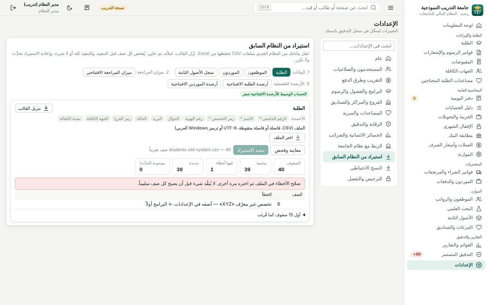
أسئلة شائعة
ما المتطلبات التقنية؟
مثبّت ويندوز والنسخة المحمولة لا يحتاجان شيئاً آخر. على لينكس أو ماك: بايثون 3.11 أو أحدث دون أي مكتبات إضافية. الاستخدام من أي متصفح حديث على الشبكة الداخلية. الربط مع Oracle 11g وحده يحتاج عميل Oracle الفوري 19.
هل يحتاج إنترنت؟
لا. كل شيء يعمل على خادم الجامعة، بما في ذلك الأدلة والخطوط والأيقونات.
كيف أنقل بياناتي من النظام القديم؟
من الإعدادات ← الاستيراد من النظام السابق: نزّل القالب لكل نوع واملأه من Excel، فيُفحص كل صف وتظهر الأخطاء برقم صفها قبل أي تنفيذ. ميزان المراجعة الافتتاحي يرحّل حسابات المراقبة إلى حساب وسيط يصبح صفراً عندما تطابقه أرصدة الطلبة والموردين التفصيلية.
ماذا يحدث عند تحديث البرنامج؟
ثبّت الإصدار الجديد فوق القديم. عند أول تشغيل يأخذ البرنامج نسخة احتياطية ثم يضيف ما استجد من جداول وأعمدة، دون حذف أو تعديل أي بيانات قائمة.
ماذا يحدث إذا انتهى الترخيص؟
يتحول البرنامج للقراءة والتصدير فقط حتى التجديد، ولا تُفقد أو تُقفل أي بيانات.
هل يمكن تعديل قيد مرحّل؟
لا، وفق مبادئ الرقابة الداخلية. يُصحَّح القيد المرحّل بقيد عكسي موثق السبب، ويبقى الأصل والعكس ظاهرين للمدقق.
كيف أجرّب البرنامج؟
شغّل «رصيد — نسخة التدريب» فتُنشأ جامعة كاملة ببيانات وهمية وحسابات تدريب لكل دور (admin، cfo، chief، acc1، cash1، audit) وكلمة المرور train2026. التفاصيل في دليل البدء.